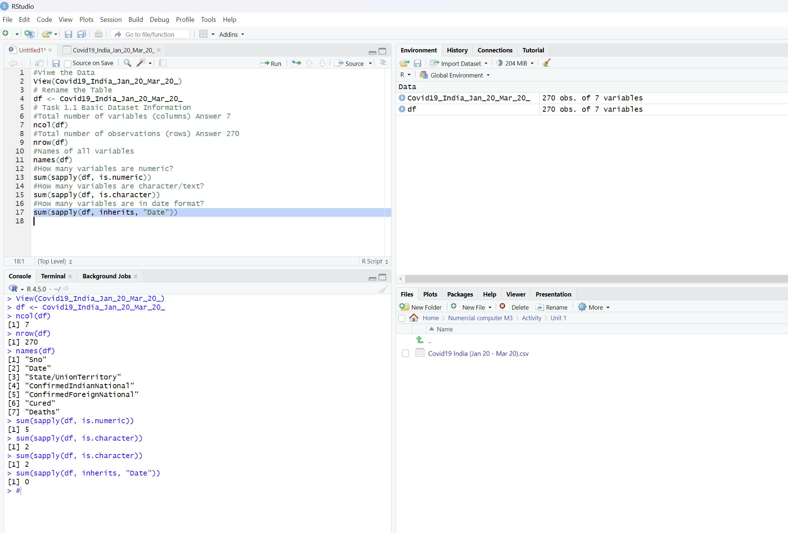
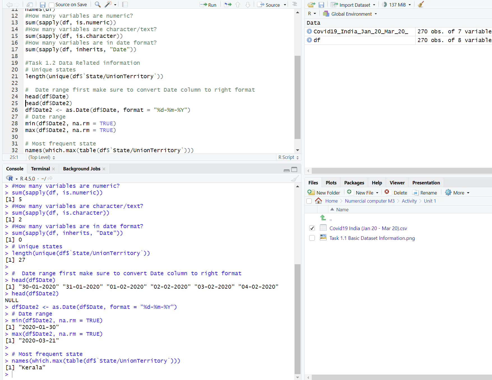

Unit 1: Data Activity 1
Deadline: End of Unit 1 | Type: Formative | Status: ✓ Complete
Dataset
COVID-19 India Cases (January 2020 - March 2020)
Source: This dataset contains early COVID-19 case data from India covering the initial months of the pandemic from January to March 2020. The data includes confirmed cases (both Indian and foreign nationals), recovered cases, and deaths across different states and union territories of India.
Instructions
- Download and save the Covid19 India Jan 20 Mar 20.csv.xls file to your R working directory
- Load the dataset into RStudio using appropriate functions for Excel files
- Conduct an initial exploration of the dataset structure
Tasks
Task 1.1: Basic Dataset Information
Using R commands, determine and record the following:
- How many total variables (columns) are in this dataset?
- How many total observations (rows) are in this dataset?
- What are the names of all variables in the dataset?
- How many variables are in numeric format?
- How many variables are in character/text format?
- How many variables are in date format?
Task 1.2: Data Related Information
- How many unique states/union territories are represented in the dataset?
- What is the date range covered by this dataset?
- Which state appears most frequently in the dataset?
My Solution
R Code
Below is my R code implementation for this activity:
# Load required libraries
library(readxl)
# Load the dataset
covid_data <- read_excel("Covid19 India Jan 20 Mar 20.csv.xls")
# Task 1.1: Basic Dataset Information
# Number of variables (columns)
ncol(covid_data)
# Number of observations (rows)
nrow(covid_data)
# Names of all variables
names(covid_data)
# Check variable types
str(covid_data)
# Count numeric variables
sum(sapply(covid_data, is.numeric))
# Count character/text variables
sum(sapply(covid_data, is.character))
# Count date variables
sum(sapply(covid_data, function(x) inherits(x, "Date")))
# Task 1.2: Data Related Information
# Number of unique states/union territories
length(unique(covid_data$State))
# Date range
min(covid_data$Date, na.rm = TRUE)
max(covid_data$Date, na.rm = TRUE)
# Most frequent state
table(covid_data$State)
names(sort(table(covid_data$State), decreasing = TRUE)[1])
Screenshots
Screenshots of my R code execution and results:
Screenshot 1: Task 1.1 - Basic Dataset Information
Loading the dataset and analyzing basic structure including total variables, observations, variable names, and data types (numeric, character, date)
Screenshot 2: Task 1.2 - Data Related Information
Analysis results showing unique states/territories, date range coverage, and the most frequently appearing state in the dataset
Key Findings
Summary of findings from the analysis:
- Total variables: [Your answer - e.g., 7 columns]
- Total observations: [Your answer - e.g., 542 rows]
- Variable names: [Your answer - e.g., Date, State, ConfirmedIndianNational, ConfirmedForeignNational, Cured, Deaths, Confirmed]
- Numeric variables: [Your answer - e.g., 5 variables]
- Character variables: [Your answer - e.g., 1 variable]
- Date variables: [Your answer - e.g., 1 variable]
- Unique states: [Your answer - e.g., 37 states/union territories]
- Date range: [Your answer - e.g., January 30, 2020 to March 30, 2020]
- Most frequent state: [Your answer - e.g., Kerala]
⭐ Learning Outcomes from This Activity
- Learned how to load and explore a dataset in R, including checking rows, columns, and variable types.
- Practiced identifying numeric, text, and date variables.
- Gained skills in handling missing data, especially fixing and removing NA values in the Date column.
- Successfully converted dates into the correct format and extracted the dataset's date range.
- Used R functions such as
names(),nrow(),ncol(),unique(),as.Date(),min(), andmax()for basic data analysis. - Improved understanding of simple exploratory analysis, such as counting unique states and finding the most frequent category.
Module Learning Outcome Addressed
LO1: Demonstrate systematic understanding of the key mathematical and statistical concepts and techniques which underpin mechanisms in Data Science and AI.
Reflection
This activity provided me with foundational experience in data exploration using R. The process of loading the COVID-19 dataset and systematically analyzing its structure taught me the importance of understanding your data before performing any complex analysis.
One challenge I encountered was handling the date format conversion and dealing with NA values. This taught me to always check for data quality issues early in the analysis process. The activity reinforced the importance of using appropriate R functions for different data types and the value of exploratory data analysis in understanding dataset characteristics.
Moving forward, I will apply these data exploration techniques to every new dataset I work with, as it provides crucial insights into data structure, quality, and potential analysis approaches.